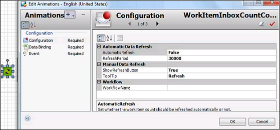
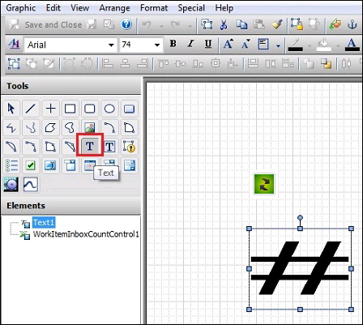
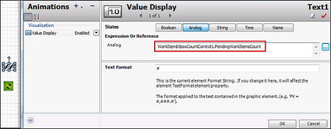
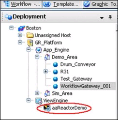
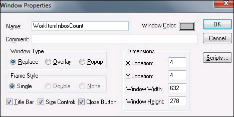
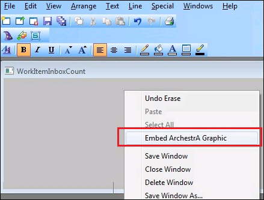
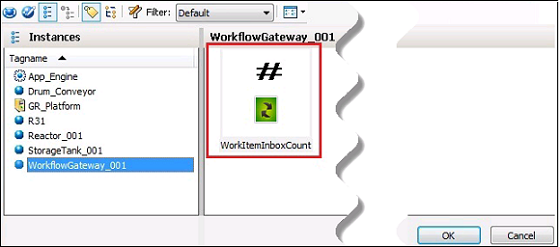
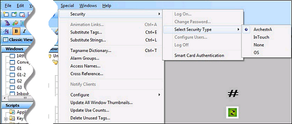
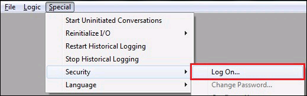

No
Using WorkItemInboxCount In InTouch
The WorkItemInboxCount control in InTouch displays the count of work items in the Inbox that have not been acknowledged or acted upon by the user. Also, the work items that have been assigned to Queues will be considered only when they are available in the user's Inbox. The count being displayed can be refreshed automatically or manually based on the configuration settings.
Using WorkItemInboxCount In InTouch
Follow Step 1 to Step 7 listed in the Initial Steps and continue:
- Select the control in the editor and double-click.
- Select Configuration under Animations to configure the control.
Following are the properties of WorkItemInboxCount control:
- AutomaticRefresh: This property is used to set whether the work item count should be refreshed automatically or not.
- RefreshPeriod: This property is used to set the refresh period in milliseconds. The minimum value for Refresh Period is 30000.
If value of the RefreshPeriod property is set less than 30000, the value is automatically refreshed to the minimum value of 30000. - ShowRefreshButton: This property is used to set whether manual data refresh button is visible or not.
- ToolTip: This property is used to set the tool tip for the Refresh button.
- WorkflowName: This property is used to set the workflow name for which the work item count will be visible. It has to be left blank to get the work item count of all the workflows.
- After configuring the control, click OK.

- Drag and drop a Text control and set its Text property value as '#'.

This hash (#) feature of InTouch will be used to display the pending work item count. The public property "PendingWorkItemsCount" of the WorkItemInboxCount control will be updated with the pending work item count.
# will be replaced by the value of the PendingWorkItemsCount property.

- Select the WorkflowGateway object instance and deploy it in the ArchestrA IDE.
- Double-click the $InTouchViewApp instance (aaReactorDemo) under ViewEngine from the ArchestrA IDE.
The InTouch WindowMaker appears.

- Create a new window for the WorkItemInboxCount control.

- Provide the name and size for the window.

- Right-click in the WorkItemInboxCount window and select Embed ArchestrA Graphic option.
The ArchestrA Galaxy Browser appears.

- Select the Instances tab and select the WorkflowGateway instance to which the graphic symbol has been added.
- Select the required graphic object ('WorkItemInboxCount').

- Enable security for the 'WorkItemInboxCount' window.
- Select Security Type as "ArchestrA".

- Save the window and exit InTouch WindowMaker.
- Save and close the object in the ArchestrA IDE.
- Deploy the $InTouchViewApp instance.
- Click the Runtime button on the right hand side.
- Open the InTouch Viewer and navigate to Special > Security > Log On.

- Enter the Credentials and click OK.

- Open the Work Item Inbox Count (the one created) window from the file menu.
The WorkItemInboxCount control loads in the window.

Note: To use new controls after upgrading AVEVA Work Tasks, re-import ArchestrA.InTouch.SkeltaControls.dll. In the Import Preference dialog select 'Skip: Do not import' to ensure the existing controls are not overwritten. For more details about how to import ArchestrA.InTouch.SkeltaControls.dll, see Initial Steps.